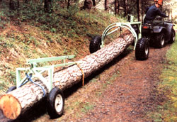
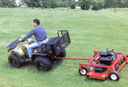
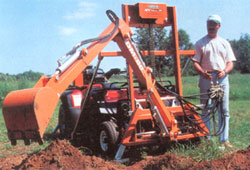
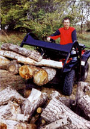
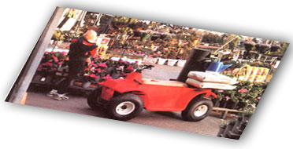
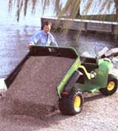

These multipurpose four-wheelers can take you and your tools where your pickup can't.
More energy-efficient than a truck and fun to drive, all-terrain utility vehicles (ATVs) are perfect machines for farm, garden and smallscale forestry work.
Just ask Lyle Hagerman, a dairy farmer and market gardener, of Picton. Ontario. "It's maneuverable, compact and powerful. The ATV's fat tires allow it to be driven over most terrain. We use ours to round up cattle, harvest vegetables and seed pastures. The new ones handle as well as a car, making them suited to anyone regardless of physical abilities."
When the ATV was first introduced in the early 1960s it was designed just for transportation. Models had only three wheels, were unstable on rough terrain and not suited to heavy work. But in 1984 when the first four- and six-wheelers hit the ground it was obvious that the heavy work of farming, gardening and forestry could be a lot easier. Most of the new machines have engine displacements of 250 to 700 cubic centimeters (cc), can pull a load of up to half a ton and reach speeds of up to 50 mph. In addition, the many attachments that can be added to the front and back of an ATV allow it to be a multiuse utility vehicle. Prices range from $2,700 to $10,000, depending on engine size, number of wheels, four-wheel-drive capability and accessories.
The most valuable labor-saving ATV activity is hauling. Several new models, notably the John Deere Gator and Kawasaki's Mule have dump boxes located behind the driver's seat. They are both wellsuited to the homestead, built for work and should last a long time.
For ATVs without dump beds, trailers can be pulled behind the machine. Simply attach a trailer ball to the ATV's back hitch and your powerful machine becomes a hauling wonder. Bulky items including lumber, compost, straw or soil can be car ried with ease. It won't be long before your overworked wheelbarrow will be gathering rust. The popular lawn and gardensized trailers work well for backyard garden jobs, but a full-size ATV trailer allows you to handle bigger projects.
"Special trailers are designed for ATVs that are similar in width to the ATV, making it easy to drive through tight places," says Honda dealer Jeff Van der Veer of Napanee, Ontario. "You can put the ATV on the trailer and tow it behind a truck to a rough or roadless work site, then attach the trailer to the ATV."
Collecting firewood is a whole lot easier with an ATV and trailer. You can pile your chainsaw, gas and tools in the trailer and drive right to the deadwood that needs cutting. You can cut and split the wood on site, load the trailer and then head to the woodshed. Since ATVs are fun to drive, recruiting a teenager to help with woodcutting isn't difficult either. (As fun as they are to drive, ATVs are not toys. For safe operation, manufacturers recommend a single operator be at least 16 years old.)
The other firewood option is to haul the logs to the woodshed and cut and split there. Several companies manufacture ATV attachments to aid in moving logs safely and with minimal environmental damage. The Novajack Company makes a hauling harness called a logging arch that lifts up the front end of the log so you can pull it behind the ATV. They also make logging trailers that can haul loads. A slightly different logging arch, manufactured by Future Forestry, is a cross between the arch and a trailer. Its design allows more of the log to be lifted off the ground, reducing drag and embedded dirt on the logs to a minimum.
ATVs make towing a wood split ter to the pile of logs you skidded up to the woodshed easy. Logs that will be sawn into lumber can he set aside. Later, you can use your ATV to tow a portable sawmill to the pile. When sawn, the lumber can be loaded onto the trailer and hauled anywhere you like.
To make wood-chip mulch, tow a chipper to the brash pile you left in the woods and blow the chips right into the trailer. We use a few boards standing upright in the back of the trailer for the chips to hit as they come out of the machine. They fall right into the trailer. It's a simple matter to tow the load of mulch to the gardens.
While we're still on the subject of firewood and logging, there is another attachment that comes in very handy from time to time: a power winch. Smaller than the 5- to 10-ton capacity of track winches, most ATV winches are rated between 1,500 to 2,000 pounds and can be mounted on the front or rear of the machine.
A downed tree, off the trail and inaccessible to the ATV, can he winched, pulled to the trail and then hooked up to be towed. Inevitably the hardworking ATV will get stuck in the mud, and the winch can be used to pull it out. Simply attach the winch cable to the base of a tree, turn on the winch and out you'll come. The winch also can be used to pull cars stuck in the snow or mud.
Winter affords an ATV owner many opportunities for work and fun. Get a set of tire chains, available from most dealers, and you can go virtually anywhere in snow or on ice. Several manufacturers make blades for the front or rear of the machine so you can clear snow from driveways and sidewalks, transforming the endless task of snow removal. One problem-your neighbors will begin dropping hints for you to plow their driveways, too. Because you will finish your work that much faster, clearing your neighbors' driveways shouldn't be a problem, and you might be able to make a little extra money.
When spring finally comes around, thoughts usually turn to gardening. The larger your garden, the more useful an ATV will be. Foxboro, Ontario, farmer Ken Cassidy uses his 20-year-old John Deere for nearly everything. "Our ATV is well-suited to the fields that are too small for full-size tractors," says Cassidy. Attachments such as disc plows, harrows, seeders, fertilizer spreaders and manure spreaders specially designed and sized for ATVs are available from some manufacturers and many accessory dealers.
The ATV also can help with landscaping and yard work. For large yards, there is even a tow-behind mower attachment with its own motor. A new yard can be leveled by towing an old bed frame behind the ATV or you can use a box scraper (a metal, rectangular, boxshaped attachment) for bigger jobs. After seeding a pasture, a piece of chain-link fence towed behind an ATV will put just enough dirt on the seeds to bury them.
A front-end loader attachment can be a benefit when moving large items. Garage Toys makes the Groundhog model, capable of lifting up to 300 pounds nearly 4 feet in the air. Norwood Industries also manufactures a multiuse attachment, the Multi-Mate. A frame attaches to the front of the ATV from which a number of tools-front-end loader, fork lift, backhoe, three-point hitch, skidder, clump box and grader blade-can be operated by a 12-volt winch powered from the ATV. Norwood recommends using an ATV with a 350-cc or higher engine with the Multi-Mate. CDS, Inc. makes a backhoe/excavator called the Beaver Pro.
Because some people never outgrow playing in the mud, there is even an ATV specially designed for wet areas. The six-or eight-wheeled Argo has an enclosed body that floats. Part boat, part ATV, it will go anywhere. Cranberry growers in the Huntsville, Ontario, area use the Argo in their cranberry bogs. Tracks (wide, flat pieces of rubber with cleats on the bottom that wrap around the wheels), available for the Argo and other ATV models, let you travel through snow up to 2 feet deep, making it an all-weather machine.
With all of the choices available to the ATV owner, matching the right tool to the job should be easy. Of course the ATV is an enjoyable piece of equipment to operate, sometimes blurring the line between work and fun. Manley Ilan of Kingston, Ontario, a 75-year-old retired farmer and proud owner of a Kawasaki ATV with a dump box says, "It sure beats walking behind a horse."
The Gorilla electric ATV can go 25 to 35 miles on a single overnight charge, travels up to 25 mph, has a load capacity of 650 pounds and can tow up to 4,000 pounds. Several other ATV manufacturers, such as John Deere and Polaris, also produce electric utility vehicles. Ask your local dealer or check out the manufacturers' Web sites for more information.
Arctic Cat www.arcticcat.com
Argo www.argoatv.com
Bombardier www.bombardier-atv.com
Gorilla Vehicles www.gorillavehicles.com
Honda Hondamotorcycles.com
John Deere www.johndeere.com
Kawasaki kawasaki.com
MAX All-Terrain Vehicles maxatvs.com
Polaris www.Polarisindustries.com
Suzuki Suzukicycles.com
Yamaha Yamaha-motor.com
|
 |
 |
 |
|
 |
 |
 |